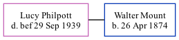

Lucy Jane Mount (née Philpott) - 1939
[ Home ] | [ Calendar ] | [ Surnames Index ] | [ Family History ]Lucy Philpott, the wife of Walter Charles Mount (the great-great-uncle of Nigel Horne).
She died before 1939.
Media
Kent, Canterbury Archdeaconry banns 1754-1928 - GBPRS/CANT/M/94100294/2
Family Tree
Generated by ged2site. Last updated on Feb 28, 2025